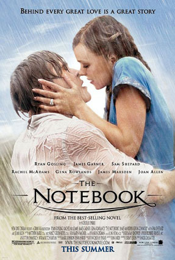

-

- Genres: Drama, Romantic
- Release data: May 20, 2004
- STORYLINE: At a modern-day nursing home, an elderly man, Duke, reads a romantic story from his notebook to a fellow patient. In 1940, Seabrook Island, South Carolina, Noah Calhoun is smitten with 17 year old heiress Allison "Allie" Hamilton after seeing her at a carnival, and they have a summer love affair. Noah takes Allie to an abandoned house that he intends to buy for them. They try to make love, but are interrupted by Noah's friend Fin with the news that Allie's parents have the police looking for her. When Allie and Noah return to her parents' mansion, Allie's mother Anne calls Noah trash and they ban her from seeing Noah. Noah walks out and Allie chases after him. The ensuing argument between the two ends in a break up and the next morning, Anne announces that the family is returning home to Charleston. Allie attempts to contact Noah, but is unable to find him, so she asks Fin to tell Noah that she loves him. When Noah gets the message he rushes to Allie's home, only to find the house empty. Noah writes to Allie every day for a year but Anne intercepts the letters and they never reach Allie. Noah enlists with Fin to fight in World War II, where Fin is killed in battle. Allie volunteers in a hospital for wounded soldiers, where she meets officer Lon Hammond Jr., a young lawyer who comes from old Southern money. The two become engaged, to the delight of Allie's parents. When Noah returns from the war, his father has sold their home so that Noah can buy the abandoned house. While visiting Charleston, Noah witnesses Allie and Lon kissing at a restaurant; he convinces himself that if he restores the house, Allie will come back to him. Allie is startled to read in the newspaper that Noah has completed the house to the specifications she made years before.Allie returns to Seabrook to find Noah living in the restored house. The two renew their relationship and make love. In the morning, Anne appears on Noah's doorstep, warning Allie that Lon has followed her to Seabrook. Anne reveals that in her youth she had been in love with a lower-class young man and still thinks of him. She then gives Allie the letters that Noah wrote to her, admitting that she hid them from Allie. Allie confesses to Lon that she has been spending time with Noah, and tells him she knows she should be with him, but she remains indecisive. Ultimately, she goes back to her relationship with Noah. In the present, it is revealed that the elderly woman is Allie, who is suffering from dementia. Duke is actually Noah, and was told by Allie during the onset of her illness to reread their journals to help her remember. She briefly remembers who he is and they reconcile, but soon forgets and panics, forcing medical personnel to sedate her. Noah has a heart attack and is sent to the hospital while Allie is sent to a dementia ward in the hospital. He visits her room in the middle of the night, and she remembers him again, expressing that she may forget again. Noah reassures her that they can do anything with the love they share, and fall asleep together in Allie's bed, dying in their sleep with a nurse discovering them in the morning.
Country: USA
Language: English
- Director: Nick Cassavetes
Stars: Gena Rowlands, James Garner, Rachel McAdams
 >
>
- Genres: Horror, Mystery
- Release data: 18 October 2002 (USA)
- STORYLINE: Teenagers Katie and Becca discuss an urban legend about a videotape; whoever watches it dies seven days later. Katie confesses that she watched the tape with her friends the previous week. That night, Katie dies and Becca goes insane. At Katie's funeral, Katie's mother Ruth asks her sister Rachel, a Seattle journalist, to investigate the death. Rachel discovers that Katie's friends were killed in bizarre accidents on the night of her death. Rachel goes to Shelter Mountain Inn, the mountain retreat where Katie and her friends watched the tape. She rents the same cabin and watches the tape; it contains gruesome and disturbing imagery. After the tape ends, she receives a phone call from an unknown female who whispers "seven days". Rachel recruits the help of her video analyst ex-boyfriend Noah. He watches the tape and Rachel makes him a copy so they can both investigate where it came from. Rachel begins to see images from the tape appear in the real world. She discovers hidden imagery of a lighthouse and identifies a woman on the tape: a horse breeder, Anna Morgan, who committed suicide after some of her horses drowned themselves off Moesko Island. Rachel finds her son Aidan watching the videotape. Leaving Aidan in Ruth's care, Rachel heads for Moesko Island to speak to Anna's widower, Richard, while Noah travels to Eola Psychiatric Hospital to view Anna's medical files. On the ferry to the island, a horse is spooked by Rachel and leaps to its death. On the island, she discovers Anna had an adopted daughter, Samara, but Richard denies it. Rachel speaks to the island doctor, who explains that Anna adopted Samara due to her infertility. Samara possessed the ability to psychically etch images onto objects and into minds, tormenting her parents and their horses. Noah finds a psychiatric file on Samara which mentions a missing video record last seen by Richard. Rachel sneaks into the Morgan house and watches the missing video, which shows Samara explaining her powers during a psychotherapy session. Richard discovers her and strikes her. Realizing Samara's evil is still at large, he electrocutes himself in the bathtub. Noah arrives and he and Rachel enter the barn. In a loft converted to a bedroom to isolate Samara from her mother, they find an image of a tree behind the wallpaper; Rachel recognizes it as a tree at the Shelter Mountain Inn. Rachel returns with Noah to the cabin at Shelter Mountain Inn, where they are led to a well beneath the floorboards. They remove the lid and Rachel is pushed inside. A hand grabs her, and Rachel experiences a vision of Anna suffocating and dumping Samara into the well, where she survived for seven days. Samara's corpse surfaces from the water. After Rachel is rescued from the well, they arrange a proper burial for Samara. Noah tells Rachel that they are now safe as more than seven days have passed since she watched the videotape. Aidan warns Rachel that it was a mistake to try to help Samara. Rachel realizes that Noah's seven days are up and rushes to save him, but the vengeful ghost of Samara materializes on his TV screen, crawls out of it and kills him. Rachel finds his disfigured corpse and returns home to destroy the tape. She concludes she was spared because she made a copy, which Aidan watched. Rachel has Aidan make a copy of the copy to show to someone else, saving him from Samara.
Country: USA
Language: English
- Director: Gore Verbinski
Stars: Naomi Watts, Martin Henderson, Brian Cox
- Genres: Drama, Romance
- Release data: 12 December 2007
- STORYLINE: Holly and Gerry are a married couple who live on the Lower East Side of Manhattan. They are deeply in love, but they fight occasionally. By winter that year, Gerry suddenly dies of a brain tumor, and Holly realizes how much he means to her as well as how insignificant their arguments were. Deeply distraught, Holly withdraws from her family and friends out of grief until they descend upon her on her 30th birthday. They are determined to prod the young widow to face the future and explore what her life choices should be. As they rally around Holly and help organize her apartment, a cake is delivered, and with it is a message from Gerry. It proves to be the first of several meaningful messages — all ending with "I Love You" — which he had arranged to have delivered to her after his death. As the seasons pass, each new message fills her with encouragement and sends her on a new adventure. Holly's mother believes that Gerry's letters are keeping Holly tied to the past. But they are, in fact, pushing her into the future. With Gerry's words as her guide, Holly slowly embarks on a journey of rediscovery. Gerry arranged for Holly and her friends Denise and Sharon to travel to his homeland of Ireland. They arrive at their destination, a house in the beautiful Irish countryside where they find letters from Gerry for Sharon & Denise, one asking Denise to take Holly to his favorite pub. While there, they meet William, a singer who strongly reminds Holly of her deceased husband. He asks her to stay to see him after his last song ("Galway Girl"), which he dedicates to her. Upon hearing it, she is overcome with emotion and walks out, because it was the song Gerry sang to her shortly after they first met.During the vacation, while on a fishing trip, they lose the boat's oars, leaving the three women stranded in the middle of a lake. During their wait for help, Sharon announces that she is pregnant and Denise reveals she is getting married. This news causes Holly to relapse emotionally and again withdraw into herself. They are eventually rescued by William, whom Sharon and Denise invite to stay the night because of the pouring rain. Unable to deny their feelings for each other, they kiss, and William and Holly become intimate. They begin a conversation about her deceased husband and Holly asks William to drive her to visit her in-laws. Upon Holly revealing their names, William realizes she is the widow of his childhood best friend. Revealing this to Holly causes her to panic, but William calms her down and starts to tell stories about his and Gerry's childhood. The next day, Holly visits Gerry's parents and while there, she also receives a letter from Gerry reminding her of their first meeting. Arriving home, Holly again withdraws from family and friends. As she continues to become more and more lost, she is inspired by Gerry after finding one of his suspender clips next to one of her shoes and realizes she has a flair for designing women's shoes; she enrolls in a class that teaches how to actually make the shoes she has designed. A new found self-confidence allows her to emerge from her solitude and embrace her friends' happiness. While on a walk with her mother, she learns that her mother was the one whom Gerry asked to deliver his letters after his death and receives the last letter. As the film ends with Holly taking her mother on a trip to Ireland, we see that Holly has opened herself up to the journey beginning with the next chapter of her life, and wherever it takes her she has the hope of falling in love again.
Country: USA
Language: English, French, Spanish
- Director: Richard LaGravenese
Stars: Richard LaGravenese (screenplay), Steven Rogers (screenplay)

- Genres: Film-catastrophe, Drama
- Release data: November 1, 1997
- STORYLINE: In 1996, treasure hunter Brock Lovett and his team aboard the research vessel Akademik Mstislav Keldysh search the wreck of RMS Titanic for a necklace with a rare diamond, the Heart of the Ocean. They recover a safe containing a drawing of a young woman wearing only the necklace dated April 14, 1912, the day the ship struck the iceberg.[Note 1] Rose Dawson Calvert, the woman in the drawing, is brought aboard Keldysh and tells Lovett of her experiences aboard Titanic. In 1912 Southampton, 17-year-old first-class passenger Rose DeWitt Bukater, her fiancé Cal Hockley, and her mother Ruth board the luxurious Titanic. Ruth emphasizes that Rose's marriage will resolve their family's financial problems and retain their high-class persona. Distraught over the engagement, Rose considers suicide by jumping from the stern; Jack Dawson, a penniless artist, intervenes and discourages her. Discovered with Jack, Rose tells a concerned Cal that she was peering over the edge and Jack saved her from falling. When Cal becomes indifferent, she suggests to him that Jack deserves a reward. He invites Jack to dine with them in first class the following night. Jack and Rose develop a tentative friendship, despite Cal and Ruth being wary of him. Following dinner, Rose secretly joins Jack at a party in third class. Aware of Cal and Ruth's disapproval, Rose rebuffs Jack's advances, but realizes she prefers him over Cal. After rendezvousing on the bow at sunset, Rose takes Jack to her state room; at her request, Jack sketches Rose posing nude wearing Cal's engagement present, the Heart of the Ocean necklace. They evade Cal's bodyguard, Mr. Lovejoy, and have sex in an automobile inside the cargo hold. On the forward deck, they witness a collision with an iceberg and overhear the officers and designer discussing its seriousness. Cal discovers Jack's sketch of Rose and an insulting note from her in his safe along with the necklace. When Jack and Rose attempt to inform Cal of the collision, Lovejoy slips the necklace into Jack's pocket and he and Cal accuse him of theft. Jack is arrested, taken to the master-at-arms' office, and handcuffed to a pipe. Cal puts the necklace in his own coat pocket. With the ship sinking, Rose flees Cal and her mother, who has boarded a lifeboat, and frees Jack. On the boat deck, Cal and Jack encourage her to board a lifeboat; Cal claims he can get himself and Jack off safely. After Rose boards one, Cal tells Jack the arrangement is only for himself. As her boat lowers, Rose decides that she cannot leave Jack and jumps back on board. Cal takes his bodyguard's pistol and chases Rose and Jack into the flooding first-class dining saloon. After using up his ammunition, Cal realizes he gave his coat and consequently the necklace to Rose. He later boards a collapsible lifeboat by carrying a lost child. After braving several obstacles, Jack and Rose return to the boat deck. The lifeboats have departed and passengers are falling to their deaths as the stern rises out of the water. The ship breaks in half, lifting the stern into the air. Jack and Rose ride it into the ocean and he helps her onto a wooden panel only buoyant enough for one person. He assures her that she will die an old woman, warm in her bed. Jack dies of hypothermia[7] but Rose is saved. With Rose hiding from Cal en route, the RMS Carpathia takes the survivors to New York City where Rose gives her name as Rose Dawson. She later finds out Cal committed suicide after losing all his money in the 1929 Wall Street crash. Back in the present, Lovett decides to abandon his search after hearing Rose's story. Alone on the stern of Keldysh, Rose takes out the Heart of the Ocean — in her possession all along — and drops it into the sea over the wreck site. While she is seemingly asleep or has died in her bed,[8] photos on her dresser depict a life of freedom and adventure inspired by the life she wanted to live with Jack. A young Rose reunites with Jack at the Titanic's Grand Staircase, applauded by those who died.
Country: USA
Language: English
- Director: James Cameron
Stars: Leonardo DiCaprio, Kate Winslet, Billy Zane